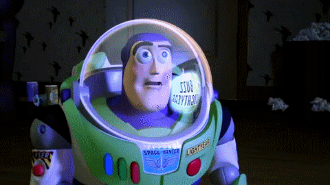
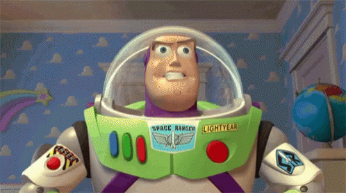
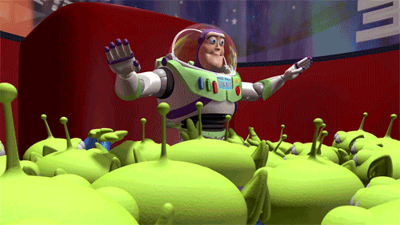

The man behind the toy
Buzz Lightyear's namesake is Buzz Aldrin, who was part of the 1st American Astronaut Team to land on the moon. Since then Buzz Aldrin has been the leader of various projects at NASA and is the forefront spokesperson on future space exploration. Buzz Lightyear also appears to share some of the leadership traits of Buzz Aldrin. Both are brave, courageous, seeing everything as a challenge that can be overcome. Creative thinkers, they come up with solutions to any barrier or crisis they face.

Buzz realised he's a toy, but knows he's more than that.
A loving and kind (and a bit quirky) leader
He is extremely loyal to his friends and is the protector within the group. Although Buzz's main mission is to defeat Emperor Zurg, his goal is to keep his friends together. Presenting as fearless and brave, Buzz has an organised and logical approach to the situations which present themselves. Using his creative thinking and problem solution skills, he overcomes any barriers and obstacles that come his way.

His friend's list is (kind of) endless
- Sheriff Woody
- Jessie
- Bo Peep
- Duke Caboom
- Lots-o'-Huggin' Bear
- Ducky
- Bunny
- Stinky Pete
- Andy Davis
- Bonnie Anderson
- Lenny
- Barbie
- Mr. Mike
- Billy
- Goat
- Gruff
- Buttercup
- Peas-in-a-pod 1
- Peas-in-a-pod 2
- Peas-in-a-pod 3
- Mr. Potato Head
- Mrs. Potato Head
- Ken Carson
- Chatter
- Santa Claus
- Molly Davis
- Rex
- RC
- Forky
- Sarge
- Green Army Men
- Wheezy
- Hamm
- Karen Beverly
- Knick
- Little Green Men (uncountable)

If you are already a Toy Story fan...
I leave these links for you to bring home some joy:
- Maybe you can buy an action figure WITH SOUND!
- Or choose some Little Green Men with your own claw, OOooooOOooooOOooohhh!
- DIYing your very unique toy can be a blast too!
- If everything seems a little too pricey, this is perfect for you to save some coin!